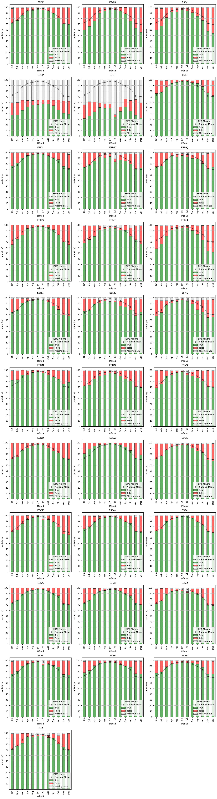
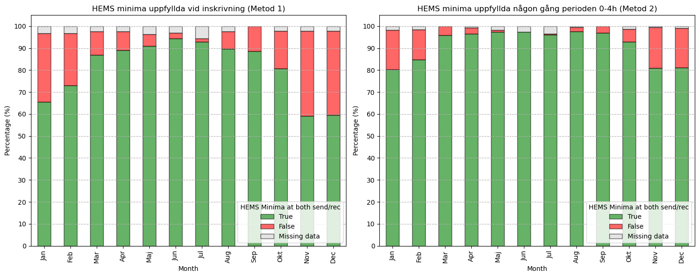
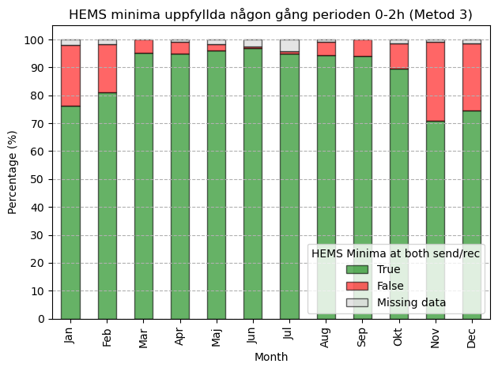

Om väder, METAR, intensivvårdstransporter
1 Bakgrund
Som en del av mitt doktorandprojekt kommer jag att utforska intensivvårdstransporter. Mitt mål är att förstå effekten av tidskritiska transporter från mindre sjukhus till universitetssjukhus.
Årligen transporteras tusentals intensivvårdspatienter i Sverige för att erbjuda erbjudas en högre vårdnivå på ett universitetssjukhus. Många intensivvårdspatienter som vårdas på universitetssjukhus har transporterats från ett mindre sjukhus.
Idag sker transporterna utan vare sig nationell standard eller samordning. Där finns stora variationer i transportprocessen. Väntetider, transporttider, utbildning av transporterande personal och organisationernas förmågor varierar stort. Faktorer såsom geografi, ekonomiska incitament, prioriteringsbeslut och lokala traditioner bidrar till variationen.
1.1 Frågeställningar, problem och möjligheter
Ytterst vill jag besvara frågor som: Vem ska åka med patienten? Hur ska man åka? Hur bygger man ett säkert, effektivt och robust transportsystem?
Tyvärr saknas ett nationellt transportregister. Det är således svårt att beskriva IVA-transporter i Sverige, både gällande medicinskt omhändertagande och logistik. Dock, tror jag, det går att lära sig något med befintliga patientdata i kombination med andra datakällor.
1.2 Analys av flygväder i Sverige
Tanken är att hitta de fall där intensivvårdskrävande patienter brådskande transporterats mellan sjukhus och där det verkar osannolikt att man kunnat flyga med HEMS baserat på METAR. Möjligen kan man då beräkna hur stor andel av transporterna som med sannolikt inte kunnat utföras med HEMS.
Statistiken kan ge ledning om hur transporter ska organiseras, t.ex. gällande tillgången till alternativa transportmetoder (fixed-wing eller vägambulans). Många avsändande sjukhus saknar beredskap att flytta patienter med vägambulans. Istället löses problemet ad-hoc. Svenskt ambulansflyg genomför huvudsakligen planerade transporter och kan ha svårt att ställa om till urakuta transporter. Att beskriva hur ofta alternativ till HEMS behövs kan ge insikter om hur transporter ska organiseras och prioriteras. En sådan beskrivning kan också ge argument för att utveckla PinS-procedurer.
En jämförelse av patienter som flyttats vid väder förenligt med HEMS, med dem som flyttats vid väder oförenligt med HEMS, är intressant. Om där skulle ses en skillnad i utfall mellan grupperna, skulle det tyda på att transporter spelar stor roll. Ett sådant fynd skulle vara ett incitament för att bygga upp bättre patientregister för att möjliggöra noggrannare studier.
1.3 Patientdata
Genom att kombinera två patientregister (Socialstyrelsens Patientregister och Svenskt Intensivvårdsregister) kan man identifiera intensivvårdspatienter som flyttas från mindre sjukhus till universitetssjukhus. Datauttaget är begränsat till vuxna patienter som behöver neurointensivvård på grund av akuta åkommor i hjärnan, såsom skallskador eller hjärnblödningar. Neurointensivvård kan bara ges på universitetssjukhus. Tidsperioden är 2010-2022. Det går att hitta drygt 6000 sådana patienter (ca. 500 patienter/år) som transporterats inom ett dygn.
2 Sammanställning av väderdata
Stegvis har väderdata förädlats på följande sätt:
- METAR för flygplatser hämtas från Luftfartsverkets sammanställningar (från ogimet.com).
- METAR analyseras med ett skript som tar varje rapport och extraherar:
- Sikt (km)
- Cloud ceiling (fot), dvs. det lägsta värdet av BKN, OVC, VV
- Cloud base (fot), dvs. det lägsta värdet av FEW, SCT, BKN, OVC, VV
- Om CAVOK anges antas både sikt och cloud ceiling/base vara obegränsade. Om NCD/NSC bedöms cloud ceiling/base vara obegränsade.
- Baserat på tiden (UTC) för varje METAR och den givna flygplatsens koordinater (hämtat från ArcGIS) beräknas (med hjälp av
PyEphem) om dagsljus eller borgerlig skymning (“civil twillight”) förelåg. Dvs. om solen stod -6° eller högre relativt horisonten. - Varje mätpunkt (METAR/ljusförhållanden) körs i ett skript som testar om “HEMS operating minima” var uppfyllt enligt “Commission Implementing Regulation (EU) 2023/1020 of 24 May 2023 amending Regulation (EU) No 965/2012 as regards helicopter emergency medical service operations”. Under antagandet två piloter och performance class 1-2 ger skriptet
trueom:
- Vid dagsljus/borgerlig skymning:
- Cloud ceiling 300-399 ft + sikt >= 2000 m
- Cloud ceiling 400-499 ft + sikt >= 1000 m
- Cloud ceiling >= 500 ft + sikt >= 800 m (en förenkling, då det väl varierar med luftrumsklass?)
- Nattetid:
- Cloud base >= 1200 ft + sikt >= 2500 m
2.1 HEMS operating minima per flygplats 2010-2022
I graferna ser man andelen METAR som i snitt, per månad under 2010-2022, är förenliga eller icke-förenliga med “HEMS operating minima” enligt ovan. Andelen “missing data” (t.ex. METAR ESDF 072220Z NIL=) redovisas. Nationellt snittvärde syns i varje graf.
3 Bedömning om väderdata vid tid för patientflytt
För varje patient finns uppgifter om avsändande IVA, mottagande sjukhus och tid för inskrivning på avsändande IVA. Genom en tabell matchas avsändande och mottagande sjukhus med närmaste flygplats. T.ex. kommer en patient som flyttas från Skövde till Karolinska att matchas till “närmsta avsändande flygplats” ESIB (Såtenäs) och “närmsta mottagande flygplats” ESSB (Bromma). METAR hämtas sedan för dessa flygplatser och tidpunkter. Dessa METAR utgör mått för hur vädret var på avsändande och mottagande sjukhus. Detta är matchningstabellen:
| formatted_icu_name | icao | airport_name |
|---|---|---|
| Bollnäs IVA | ESSD | Dala Airport |
| Borås IVA | ESGG | Göteborg Landvetter Airport |
| Eksjö IVA | ESGJ | Jönköping Airport |
| Eskilstuna IVA | ESOW | Stockholm Västerås Airport |
| Gällivare IVA | ESNG | Gällivare Airport |
| Gävle IVA | ESSD | Dala Airport |
| Helsingborg IVA | ESTA | Ängelholm Airport |
| Falun IVA | ESSD | Dala Airport |
| Hudiksvall IVA | ESNN | Sundsvall-Härnösand Airport |
| Kristianstad IVA | ESMK | Kristianstad Airport |
| Halmstad IVA | ESMT | Halmstad Air Base |
| Mora IVA | ESSD | Dala Airport |
| Västervik IVA | ESSW | Västervik Airport |
| Karlskoga IVA | ESOE | Örebro Airport |
| Lindesberg IVA | ESOE | Örebro Airport |
| Örebro IVA | ESOE | Örebro Airport |
| Jönköping IVA | ESGJ | Jönköping Airport |
| Kalix IVA | ESPA | Luleå Airport |
| Kalmar IVA | ESMQ | Kalmar Airport |
| Karlskrona IVA | ESDF | Ronneby Airport |
| Karlskrona TIVA | ESDF | Ronneby Airport |
| Karlstad IVA | ESOK | Karlstad Airport |
| Torsby IVA | ESOK | Karlstad Airport |
| Arvika IVA | ESOK | Karlstad Airport |
| Ljungby IVA | ESMX | Växjö Airport |
| Lycksele IVA | ESNL | Lycksele Airport |
| Trollhättan IVA | ESIB | Såtenäs Airbase |
| Norrköping IVA | ESSP | Norrköping Airport |
| Norrtälje IVA | ESSA | Stockholm-Arlanda Airport |
| Nyköping IVA | ESKN | Stockholm Skavsta Airport |
| Piteå IVA | ESPA | Luleå Airport |
| Karolinska CIVA | ESSB | Stockholm-Bromma Airport |
| Karolinska NIVA | ESSB | Stockholm-Bromma Airport |
| St Göran IVA | ESSB | Stockholm-Bromma Airport |
| Skövde IVA | ESIB | Såtenäs Airbase |
| Lidköping IVA | ESIB | Såtenäs Airbase |
| Skellefteå IVA | ESNS | Skellefteå Airport |
| Sollefteå IVA | ESNK | Kramfors-Sollefteå Airport |
| Sunderby IVA | ESPA | Luleå Airport |
| Sundsvall IVA | ESNN | Sundsvall-Härnösand Airport |
| SÖS Med IVA | ESSB | Stockholm-Bromma Airport |
| SÖS IVA | ESSB | Stockholm-Bromma Airport |
| Södertälje IVA | ESSB | Stockholm-Bromma Airport |
| Varberg IVA | ESMT | Halmstad Air Base |
| Visby IVA | ESSV | Visby Airport |
| Värnamo IVA | ESMX | Växjö Airport |
| Västerås IVA | ESOW | Stockholm Västerås Airport |
| Växjö IVA | ESMX | Växjö Airport |
| Ystad IVA | ESMS | Malmö Sturup Airport |
| Örnsköldsvik IVA | ESNO | Örnsköldsvik Airport |
| Östersund IVA | ESNZ | Åre-Östersund Airport |
| Drottning Silvias Barnsjukhus BIVA | ESGG | Göteborg Landvetter Airport |
| Karolinska universitetssjukhuset, Solna | ESSB | Stockholm-Bromma Airport |
| Sahlgrenska universitetssjukhuset | ESGG | Göteborg Landvetter Airport |
| Akademiska sjukhuset | ESSA | Stockholm-Arlanda Airport |
| Universitetssjukhuset i Linköping | ESSL | Linköping/Saab Airport |
| Norrlands universitetssjukhus | ESNU | Umeå Airport |
| Universitetssjukhuset i Lund | ESMS | Malmö Sturup Airport |
Det finns flera begränsningar:
- Det är långt från vissa sjukhus till “matchad flygplats” (Hudiksvalls sjukhus - Sundsvalls flygplats, Gävle sjukhus - Borlänge flygplats osv.)
- Jag får inte tag i METAR från Ärna och Mora.
- METAR från ESGP (Säve) och ESGT (Trollhättan) har mycket “missing data”. Vädret på Sahlgrenska och Trollhättan behöver således härledas av METAR från Landvetter respektive Såtenäs.
4 Matchning av väderdata och patienttransporter
Härefter matchas transporterade patienter mot METAR på närmsta flygplatser för avsändande och mottagande sjukhus vid tidpunkten för inläggning på IVA (+/- 30 minuter). Skriptet beräknar om dagsljus rådde hos avsändare/mottagare och därefter om HEMS operating minima var uppfyllda på avsändande sjukhus och mottagande sjukhus.
Nedan följer några rader från tabellen. Kolumner med patientdata är borttagna. Det går att “scrolla” i tabellen.
| avs_iva | mott_sjukhus | intid_iva_utc | flygplats_avs | flygplats_mott | avs_metar | avs_dag | avs_hems_min | mott_metar | mott_dag | mott_hems_min |
|---|---|---|---|---|---|---|---|---|---|---|
| Sunderby IVA | Norrlands universitetssjukhus | 2016-01-09 19:00:00+00:00 | Luleå Airport | Umeå Airport | METAR ESPA 091850Z 29001KT CAVOK M15/M17 Q1011= | False | True | METAR ESNU 091850Z 32002KT CAVOK M24/M27 Q1014 R14/72//40= | False | True |
| Bollnäs IVA | Akademiska sjukhuset | 2016-01-11 18:40:00+00:00 | Dala Airport | Stockholm-Arlanda Airport | METAR ESSD 111850Z 30002KT 2400 -SN VV005 M02/M02 Q0993 RESHSN REDZ= | False | False | METAR ESSA 111850Z 13008KT 4000 -DZRA BR OVC003 01/01 Q0994 R01L/510275 R08/510279 R01R/SNOCLO TEMPO 3000 BKN005= | False | False |
| Karlskoga IVA | Akademiska sjukhuset | 2016-01-12 07:46:00+00:00 | Örebro Airport | Stockholm-Arlanda Airport | METAR ESOE 120750Z 07008KT 3900 -SN FEW005 BKN008 00/00 Q0994= | True | True | METAR ESSA 120750Z 01009KT 9999 -FZDZ FEW014 M04/M06 Q0995 R01L/520267 R08/520266 R01R/SNOCLO TEMPO 4000 BKN015= | True | True |
| Falun IVA | Akademiska sjukhuset | 2016-01-13 18:20:00+00:00 | Dala Airport | Stockholm-Arlanda Airport | METAR ESSD 131820Z 31009KT CAVOK M13/M17 Q1007= | False | True | METAR ESSA 131820Z 32019KT 9999 -SN FEW011 BKN016 M10/M12 Q1002 R01L/550256 R08/420236 R01R/SNOCLO TEMPO 3000 -SN VV010= | False | False |
| Visby IVA | Karolinska universitetssjukhuset, Solna | 2016-01-13 20:35:00+00:00 | Visby Airport | Stockholm-Bromma Airport | METAR ESSV 132020Z 33022KT 9999 BKN016 M04/M07 Q1002 R03/72//80= | False | True | METAR ESSB 132020Z 31015KT 9999 FEW011 BKN015 M09/M13 Q1004 R30/45//65= | False | False |
4.1 Medgav vädret HEMS vid dessa patientfall?
Det går att gissa om HEMS var möjligt på flera sätt, de två jag testat är:
- Metod 1: Om METAR/ljusförhållanden vid tidpunkten för inläggning på IVA var förenlig med HEMS hos både avsändare och mottagare.
- Metod 2: Alla METAR, i ett fönster 0-4 timmar från inläggning, används enligt:
- Om alla METAR/ljusförhållande under tidsfönstret hos avsändare och/eller mottagare var oförenliga med HEMS operating minima, tolkar algoritmen det som att transport med HEMS mycket sannolikt var omöjlig.
- Om minst en METAR/ljusförhållanden under tidsfönstret hos både avsändare eller mottagare är förenlig med HEMS operating minima, tolkar algoritmen det som att transport med HEMS sannolikt var möjlig.
Genom att processa METAR med denna logik ser tabellen nu ut som:
| avs_iva | mott_sjukhus | intid_iva_utc | flygplats_avs | flygplats_mott | avs_metar | avs_dag | avs_hems_min | avs_hems_min_4h | mott_metar | mott_dag | mott_hems_min | mott_hems_min_4h |
|---|---|---|---|---|---|---|---|---|---|---|---|---|
| Sunderby IVA | Norrlands universitetssjukhus | 2016-01-09 19:00:00+00:00 | Luleå Airport | Umeå Airport | METAR ESPA 091850Z 29001KT CAVOK M15/M17 Q1011= | False | True | True | METAR ESNU 091850Z 32002KT CAVOK M24/M27 Q1014 R14/72//40= | False | True | True |
| Bollnäs IVA | Akademiska sjukhuset | 2016-01-11 18:40:00+00:00 | Dala Airport | Stockholm-Arlanda Airport | METAR ESSD 111850Z 30002KT 2400 -SN VV005 M02/M02 Q0993 RESHSN REDZ= | False | False | True | METAR ESSA 111850Z 13008KT 4000 -DZRA BR OVC003 01/01 Q0994 R01L/510275 R08/510279 R01R/SNOCLO TEMPO 3000 BKN005= | False | False | False |
| Karlskoga IVA | Akademiska sjukhuset | 2016-01-12 07:46:00+00:00 | Örebro Airport | Stockholm-Arlanda Airport | METAR ESOE 120750Z 07008KT 3900 -SN FEW005 BKN008 00/00 Q0994= | True | True | True | METAR ESSA 120750Z 01009KT 9999 -FZDZ FEW014 M04/M06 Q0995 R01L/520267 R08/520266 R01R/SNOCLO TEMPO 4000 BKN015= | True | True | True |
| Falun IVA | Akademiska sjukhuset | 2016-01-13 18:20:00+00:00 | Dala Airport | Stockholm-Arlanda Airport | METAR ESSD 131820Z 31009KT CAVOK M13/M17 Q1007= | False | True | True | METAR ESSA 131820Z 32019KT 9999 -SN FEW011 BKN016 M10/M12 Q1002 R01L/550256 R08/420236 R01R/SNOCLO TEMPO 3000 -SN VV010= | False | False | True |
| Visby IVA | Karolinska universitetssjukhuset, Solna | 2016-01-13 20:35:00+00:00 | Visby Airport | Stockholm-Bromma Airport | METAR ESSV 132020Z 33022KT 9999 BKN016 M04/M07 Q1002 R03/72//80= | False | True | True | METAR ESSB 132020Z 31015KT 9999 FEW011 BKN015 M09/M13 Q1004 R30/45//65= | False | False | True |
4.2 Andel patienttransporter där HEMS operating minima var uppfyllda (2010-2022)
Denna analys är begränsad till transporter från sjukhus som relativt ofta använder HEMS, nämligen: Arvika, Bollnäs, Eskilstuna, Falun, Gällivare, Gävle, Hudiksvall, Karlskoga, Karlstad, Lidköping, Lindesberg, Lycksele, Mora, Skövde, Sollefteå, Sunderby, Torsby, Trollhättan, Nyköping, Visby, Västerås, Örebro och Östersund.
T.ex. är Norrköping uteslutet, då de sällan använder HEMS för transport till Linköping.

T.v. Metod 1: Andel patienttransporter där HEMS operating minima var uppfyllda både hos avsändare och mottagare vid inskrivning på IVA, snitt per kalendermånad (2010-2022)
T.h. Metod 2: Andel patienttransporter där HEMS operating minima var uppfyllda minst en gång hos både avsändare och mottagare, under tidsfönstret 0-4 timmar från inskrivning på IVA, snitt per kalendermånad (2010-2022)
4.2.1 Begränsningar och alternativ
- Det är lätt att tänka sig situationer då denna skattning baserat på tidsfönster fallerar. T.ex. ok väder/ljus i början av fönstret, dåligt eller mörkt i slutet. Denna simpla algoritm (metod 2) tolkar då HEMS som möjligt, även om man i verkligheten inte hade tagit sig hem.
- Ett alternativ (metod 3) är att korta ner tidsfönstret till 0-2 timme, detta enligt logiken att man annars kommer tvingas välja alternativa färdmedel om man inte snabbt kan komma iväg med HEMS.
- Ett annat alternativ (metod 4) är att kategorisera i tre grupper:
- Om alla METAR under tidsfönstret hos antingen avsändare eller mottagare är oförenliga med HEMS operating minima, tolkar algoritmen et som att transport med HEMS mycket sannolikt var omöjlig.
- Om minst en METAR under tidsfönstret hos både avsändare eller mottagare är förenlig med HEMS operating minima, tolkar algoritmen det som att transport med HEMS kanske var möjlig.
- Om alla METAR under tidsfönstret hos både avsändare eller mottagare är förenliga med HEMS operating minima, tolkar algoritmen det som att transport med HEMS mycket sannolikt var möjlig.
Såhär skulle fördelningen av transporter förenliga med HEMS se ut om fönstret är 0-2 timmar (metod 3)

Med denna metod blir det såklart fler tillfällen där HEMS ter sig omöjligt, omkring 20-25% vintertid och kring 10% utslaget på hela året. I Läkartidningen rapporterade Avincis baschef i Göteborg att de ställer in cirka 25% uppdrag vintertid och 14% på hela året (https://lakartidningen.se/opinion/debatt/2024/03/gps-baserad-inflygning-okar-tillgangligheten-for-luftambulans/).
5 Att fundera på…
- Verkar jag ha fattat väderminima?
- Går det att sätta en siffra kraven på sikt vid cloud ceiling >500 ft dagtid? Som det är nu har jag satt 800 m.
- Har reglerna för HEMS-minima ändrats på något betydande sätt 2010-2022?
- Använder du och dina kollegor METAR för att bedöma risk för nedisning? Vad jag förstått kan “ICG” och liknande förekomma i METAR. Är i sådana fall dessa uppgifter i METAR så pass tillförlitliga att det är värt för mig att försöka plocka ut uppgifterna?
- Går det att säga hur stor skillnad PinS hade gjort vid en given METAR där HEMS operating minima inte var uppfyllda?
- Slutligen, givet vad jag har, dvs. METAR… ser du något annat bättre sätt att lista ut om HEMS hade varit möjligt?